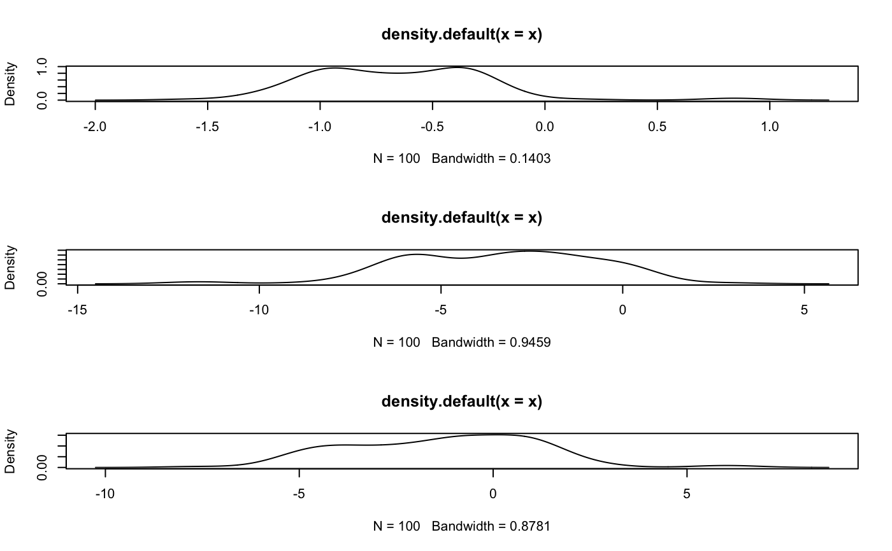

RWMH.RdRWMH computes random draws of parameters using a specified proposal distribution.
The default is the normal distribution
RWMH(data, propob = NULL, posterior = NULL, iter = 1500, burn = 500, vscale = 1.5, start = NULL, prior = "Normal", mu = 0, sig = 10)
| data | data required for the posterior distribution. First column is the outcome |
|---|---|
| propob | a list of mean and variance-covariance of the normal proposal distribution (default: NULL i.e. internally generated). Write list as propob=list(mode=mode,var=variance-covariance) |
| posterior | the posterior distribution. It is set to null in order to use the logit posterior.
The user can specify log posterior as a function of parameters and data (pars,data). For a more
flexible and generic implementation, use |
| iter | number of random draws desired |
| burn | burn-in period for the Random Walk MH algorithm |
| vscale | a positive value to scale up or down the variance-covariance matrix in the proposal distribution |
| start | starting values of parameters for the MH algorithm. It is automatically generated from the proposal distribution but the user can also specify. |
| prior | the prior distribution (default: "Normal", alternative: "Uniform") |
| mu | the mean of the normal prior distribution (default:0) |
| sig | the variance of the normal prior distribution (default:10) |
val a list of matrix of draws Matpram and the acceptance rate
y = indicat(faithful$waiting,70) x = scale(cbind(faithful$eruptions,faithful$eruptions^2)) data = data.frame(y,x); propob<- lapl_aprx(y,x) RWMHob_n<- RWMH(data=data,propob,iter = 102, burn = 2) # prior="Normal"#> Random Walk MH algorithm successful. Acceptance ratio = 0.2843137RWMHob_u<- RWMH(data=data,propob,prior="Uniform",iter = 102, burn = 2)#> Random Walk MH algorithm successful. Acceptance ratio = 0.372549